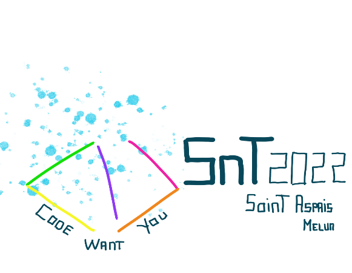

Chaque année, des fashion weeks ("semaines de la mode") se déroulent dans le monde entier. Les plus connues se passent dans les capitales de la mode:
- New York
- Londres
- Milan
- Paris
Ces quatres semaines se succèdent respectivement. Tout cela prend se déroule en, à peu près, un mois.
Nous vous présentons ici les différentes fashion weeks de Paris. Le site de la Paris fashion week propose le calendrier des défilés, des articles sur la mode et, aussi, des liens qui mènent vers la difusion en direct de ceux-ci ou encore de leur rediffusion.
Tous les ans, les fashion weeks se passent par paires. La fashion week printemps-été et celle d'automne-hiver. Pendant cette fashion week, des mannequins feminins defilent en portant des habits de grandes marques. On retrouve tout de même quelques hommes qui défilent lors de ces saisons.
 (Naomi Campbell Balmain S/S 2022)
(Naomi Campbell Balmain S/S 2022) Dans le même style que la fashion week pour femmes, la fashion week pour homme a lieu. Cette fois-ci on retrouve donc uniquement des hommes.
 (Défilé Dior homme Paris S/S 2022)
(Défilé Dior homme Paris S/S 2022) La fashion week haute couture est très spéciale. Premièrement, elle prend place seulement à Paris, et peu de marques sont éligibles à défiler pour cette session. Celles-ci doivent s'inscrire sur un calendrier longtemps à l'avance et doivent remplir certains critères :
-deux ateliers présents dans les maisons de la marques
-une certaines surfaces de tissu doit être utilisée
-un certain nombre d´employés.
Ainsi, une marque qui fait la demande pour avoir le titre de maison haute couture, qui rempli tous les critères et qui défile pendant cette semaine obtiendra, pour un an, cette appellation.
 (Défilé Viktor et Rolf S/S 2022)
(Défilé Viktor et Rolf S/S 2022) Aussi des célébrités sont invités pour regarder les délifilés, ils sont souvent placés au premier rang, appelés front row et quelques personnes viennent pour les voir. De plus, des fans de mode s´habillent en fonction d´une marque ou du thème donné par cette dernière et se rendent au lieu du défilé afin d´essayer d´être repéré et de rentrer pour y assister. Il y a d´ailleurs de nombreux photographes qui restent devant ces endroits pour prendre des photos de ces personnes ou encore des stars qui arrivent à l´évenement. On appelle ça le street style.
 (Léna situation, influenceuse, défilé Balmain F/W 2022)
(Léna situation, influenceuse, défilé Balmain F/W 2022) (Street style photo de "www.harpersbazaar.com")
(Street style photo de "www.harpersbazaar.com")Il y a en tout 6 Paris fashion weeks lors d´une année, la pluplart sont accompagnées d´évènements similaires à travers le monde et regroupent un grand nombre de férus de mode.
